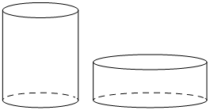

Opus100
Предварительные разборы, внешнего эталона нет.
| Дано два цилиндра. Объём первого цилиндра равен 15. У второго цилиндра высота в 3 раза меньше, |  |
{
"complete": true,
"included": true,
"exclusion_reasons": [],
"author_mode": "standalone_initial",
"author_path": "data\\annotation\\runs\\2026-11-07-fipi-team-bogdan108-051-150\\raw\\author\\F4F51D.json",
"auditor_path": "data\\annotation\\runs\\2026-11-07-fipi-team-bogdan108-051-150\\raw\\auditor\\F4F51D.json",
"feedback_ref": null,
"source_run": "data/annotation/runs/2026-11-07-fipi-team-bogdan108-051-150"
}{
"task_id": "F4F51D",
"solution_status": "solved",
"answer": "20",
"steps": [
{
"id": "s1",
"action": "Выразить отношение объёмов цилиндров через отношения радиусов и высот по формуле V=πr²h",
"result": "V2/V1 = 2²·(1/3) = 4/3",
"kc_ids": [
"kc1"
],
"input_refs": [
"condition"
]
},
{
"id": "s2",
"action": "Умножить объём первого цилиндра на найденное отношение",
"result": "V2 = 15·4/3 = 20",
"kc_ids": [
"kc2"
],
"input_refs": [
"condition",
"s1"
]
}
],
"kc_candidates": [
{
"id": "kc1",
"name": "Найти отношение объёмов цилиндров по отношениям радиусов и высот",
"description": "Вход: во сколько раз изменены радиус основания и высота цилиндра. Операция: по формуле V=πr²h получить множитель объёма как квадрат множителя радиуса, умноженный на множитель высоты. Граница: тела вида цилиндр, известные кратные отношения линейных размеров."
},
{
"id": "kc2",
"name": "Вычислить величину по известному значению и коэффициенту отношения",
"description": "Вход: значение одной величины и отношение второй к первой. Операция: умножить значение на коэффициент. Граница: прямое пропорциональное масштабирование."
}
],
"methods": [
{
"id": "m1",
"name": "Масштабирование объёма цилиндра через отношения размеров",
"step_ids": [
"s1",
"s2"
]
}
],
"warnings": []
}{
"task_id": "F4F51D",
"catalog_version": "fipi50-editorial-v1-frozen",
"decisions": [
{
"local_kc_id": "kc1",
"status": "new_candidate",
"catalog_kc_id": null,
"evidence": [
{
"ref": "step:s1:action",
"quote": "Выразить отношение объёмов цилиндров через отношения радиусов и высот по формуле V=πr²h"
},
{
"ref": "step:s1:result",
"quote": "V2/V1 = 2²·(1/3) = 4/3"
}
],
"context_refs": [
"condition"
],
"alternatives_checked": [
{
"catalog_kc_id": "similar_area",
"reason": "Квадрат коэффициента подобия для площадей подобных фигур; цилиндры здесь не подобны (радиус ×2, высота ×1/3), речь об объёме с разными множителями по измерениям."
},
{
"catalog_kc_id": "literal_19971b364ca1",
"reason": "Объём призмы через площадь основания и высоту; объект — призма, а не цилиндр, и операция — прямое вычисление, а не отношение объёмов."
},
{
"catalog_kc_id": "cylinder_lateral",
"reason": "Площадь боковой поверхности S=2πrh, а не объём."
},
{
"catalog_kc_id": "physical_formula_substitution",
"reason": "Подстановка чисел в заданную формулу; здесь формула объёма не дана в условии, и действие — вывод множителя изменения через степени отношений."
}
],
"rationale": "Операция: из V=πr²h получить множитель изменения объёма как (k_r)²·k_h при заданных кратных изменениях радиуса и высоты прямого кругового цилиндра. В каталоге нет узла объёма цилиндра или масштабирования объёма по неравным множителям измерений. Математически верно: 4·(1/3)=4/3.",
"proposal": {
"name": "Находить отношение объёмов цилиндров по отношениям радиусов и высот",
"definition": "Для прямых круговых цилиндров по V=πr²h выразить V2/V1 как квадрат отношения радиусов, умноженный на отношение высот; применимо и при неподобных цилиндрах."
},
"blocking": false,
"issue_ids": []
},
{
"local_kc_id": "kc2",
"status": "uncertain",
"catalog_kc_id": null,
"evidence": [
{
"ref": "step:s2:action",
"quote": "Умножить объём первого цилиндра на найденное отношение"
},
{
"ref": "step:s2:result",
"quote": "V2 = 15·4/3 = 20"
}
],
"context_refs": [
"condition",
"step:s1:result"
],
"alternatives_checked": [
{
"catalog_kc_id": "physical_formula_substitution",
"reason": "Нет заданной формулы и согласования единиц; это умножение числа на коэффициент."
},
{
"catalog_kc_id": "literal_6308771d01a6",
"reason": "Вычисление значения функции по формуле; здесь нет функции, лишь масштабирование известного значения."
}
],
"rationale": "Действие — арифметическое умножение известного значения на отношение (15·4/3=20, верно). По инструкции арифметику не следует дробить в отдельный KC; граница между самостоятельным KC и завершающей частью kc1 неоднозначна, подходящего узла каталога нет.",
"proposal": null,
"blocking": false,
"issue_ids": [
"i1"
]
}
],
"issues": [
{
"id": "i1",
"kind": "boundary",
"refs": [
"step:s2:action"
],
"description": "kc2 описывает тривиальное масштабирование числа коэффициентом; вероятно, это арифметическое завершение действия kc1, а не отдельный навык. Решение о выделении требует согласования.",
"blocking": false,
"affected_local_kc_ids": [
"kc2"
]
}
],
"review_scope": "KC mapping with incidental mathematical checks; not expert validation"
}[]
{
"included": true,
"exclusion_reasons": [],
"source_policy_included": true,
"source_policy_exclusion_reasons": []
}